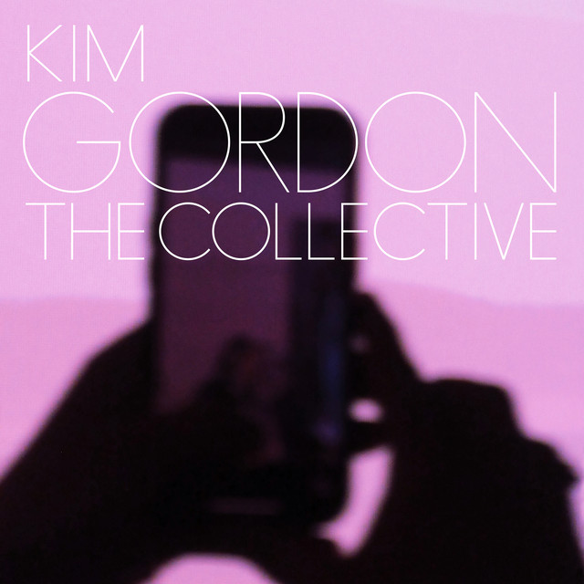

Kim Gordon - The



Información del álbum facilitada por discogs.com:
Fecha de lanzamiento: 2024
Géneros: Electronic, Hip Hop, Rock
Estilos: Noise Rock, No Wave, Trap, Illbient, Leftfield
Tracklist:
A1. Bye Bye (feat. SADPONY & SADPONY & Justin Raisen & Ainjel Emme & Kim Gordon & Jeremiah Raisen & Justin Raisen & Kim Gordon)
A2. The Candy House (feat. Justin Raisen & Kim Gordon & YBG (2) & Justin Raisen & Kim Gordon)
A3. I Don’t Miss My Mind (feat. Ainjel Emme & Justin Raisen & Kim Gordon & Justin Raisen & Kim Gordon)
A4. I’m A Man (feat. Anthony Paul Lopez & Justin Raisen & Kim Gordon & Anthony Paul Lopez & Justin Raisen & Kim Gordon)
A5. Trophies (feat. Anthony Paul Lopez & Justin Raisen & Kim Gordon & Anthony Paul Lopez & Justin Raisen & Kim Gordon)
A6. It’s Dark Inside (feat. Anthony Paul Lopez & Justin Raisen & Kim Gordon & Anthony Paul Lopez & Justin Raisen & Kim Gordon)
B1. Psychedelic Orgasm (feat. Anthony Paul Lopez & Justin Raisen & Kim Gordon & Anthony Paul Lopez & Justin Raisen & Kim Gordon)
B2. Tree House (feat. Sarah Register & Anthony Paul Lopez & Justin Raisen & Kim Gordon & Justin Raisen & Kim Gordon)
B3. Shelf Warmer (feat. Sarah Register & Anthony Paul Lopez & Justin Raisen & Kim Gordon & Justin Raisen & Kim Gordon)
B4. The Believers (feat. Ainjel Emme & SADPONY & Anthony Paul Lopez & Justin Raisen & SADPONY & Kim Gordon & Anthony Paul Lopez & Jeremiah Raisen & Justin Raisen & Kim Gordon)
B5. Dream Dollar (feat. Joe Kennedy (5) & Justin Raisen & Kim Gordon & Joe Kennedy (5) & Justin Raisen & Kim Gordon)